Big Meaty Book of Races
Table of contents
- Armad
- Baddie Box
- Blockstepper
- Bonnetter
- Boomboxer
- Bramball
- Brock
- Broodal
- Bubblainian
- Bulrush
- Cataquack
- Cherbil
- Coconutter
- Concordian
- Crab
- Cragnon
- Cursya
- Dorrie
- Dragon
- Emoglobin
- Fake Block
- Floro Sapien
- Fractone
- Fronk
- Gamboo
- Gearmo
- Gooble
- Gotchawrench
- Gushen
- Gusty
- Honeybee
- Inchworm Pipe
- Jibberjay
- Kerpop
- Li'l Oink
- Lochlady
- Milde
- Mister I
- New Donker
- Phanto
- Pigarithm
- Pi'illo
- Pixl
- Poplin
- Portrait Ghost
- Sammer Guy
- Steam Gardener
- Shiverian
- Shroob
- Squirpian
- Talking Flower
- Theet
- Tiki
- Topman
- Tostarenan
- Tox Box
- Tsubon
- Twilighter
- Uproot
- Virus
- Volbonan
- Waddlewing
- Whittle

Armad
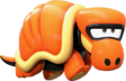
From Super Mario Bros. Wonder
These hardy desert wanderers stomp around in search of water. They live long lives, and have longer memories to go with it.
+2 Heart
1 Power, 1 DefensePros
+ Athletics (Rolling)
+ Knowhow (Desert)
+ Knowhow (History)Cons
Handless
Weakness (Aerial)
You automatically retract into your shell; This leaves you completely Stunned (6) for the next 2 turns. If you are attacked from the front during this time, you knock into the ally behind you, dealing 2 damage to them, and ending your Stunned status.Tech Defaults
Boost (Defense)
Indirect
Secure
SimpleOptional: Variant (Athletics - Primary Only) on Indirect attacks.
Baddie Box
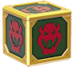
From Super Mario 3D Land
These bizarre blocks are capable of continuously conjuring enemies from within themselves. They have been seen conjuring other objects as well, but mooks and minions appear to be their specialty.
+1 Heart, +1 Spirit
1 Power, 1 DefensePros
+ Guard (Melee)
+ Magic (Conjuring)
+ Steady (VS Status)
Efficient (Minions)Cons
Handless
LeglessTech Defaults
Boost (Attack)
Indirect
Minion
Weaken
Blockstepper
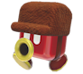
From Super Mario 3D World
Blocksteppers are nothing if not team players. Always marching at least in pairs, you'd be hard pressed to find a blockstepper without at least one staunch ally by their side.
+1 Heart, +1 Courage
1 Power, 0 DefensePros
+ Coordination (Marching)
+ Notice (Hiding)
+ Cheer (Rally Together)Cons
HandlessTech Defaults
Boost (Any)
Minion (Blocksteppers)
Repeat
Shared
Bonnetter
From Super Mario Odyssey
Bonnetters travel the world wide via airships of their likeness. They have an impeccable sense of fashion, and none would dare chastise a bonneeter's opinion on attire.
Credit to @deuceblitz and @lucydndprincess on Discord for help with the capture State.
+1 Spirit
1 Power, 0 DefensePros
+ Crafts (Vehicles)
or + Crafts (Headwar)
+ Knowhow (Style)
+ Persuade (Sales)
HoverCons
LeglessOther Traits
State (Capture)
By spending 2 FP, you can attempt to possess an enemy. This is considered a Charm technique that uses Athletics.
An enemy Charmed in this way takes your place in combat, and you must use your action to maintain the Charm. While you have an enemy charmed in this way, any damage the enemy would take is inflicted on you instead. You can maintain this Charm for a number of turns per grade of success.
Nice!: 1 turn
Good!: 2 turns
Great!: 3 turns
Wonderful!: 4 turns
Excellent!: 5 turns
Unbelievable!: 6 turnsTech Defaults
Aerial
Daze x2
Disorient
Throw

Boomboxer
From Super Paper Mario
These bizarre creatures have boombox-like protrusions sticking out of their heads. It's unclear if they make loud noises out of self-defense or because they like it, but they make good companions if you can handle their sudden outbursts.
Created by @piyohthegenius
+1 Heart, +1 Courage
1 Power, 0 DefensePros
+ Notice (Noise)
+ Bully (Deafening) + Perform (Music)Cons
Weakness (Blast) You take +2 damage and are Stunned (1) for the number of turns equal to the damage taken.Tech Defaults
Burst
Element (Sound)
Piercing
Ranged

Bramball
From New Super Mario Bros. Wii
The humble bramball strolls from place to place, not paying much mind to what's in its way, or where it's going. Many would describe a bramball as amicable, though not much for conversation, and being marvelous helps when in need of a quick pick-me-up.
+1 Heart, +1 Spirit
1 Power, 0 DefensePros
+ Coordination (Stomping)
+ Knowhow (Flora)
+ Cheer (FP)
Contact
The attacker takes 1 damage, and you make a Steady check; the attacker is Dazed for 1 turn per Grade of Success.Cons
Handless
Weakness (Aerial, Underfoot)
Aerial and Underfoot attacks ignore your Contact traitTech Defaults
Flowery
Overrun
Reach
Selective, Indirect

Brock
From Mario & Luigi: Bowser's Inside Story
Brocks are best described as hardy and astute. Even the most humble of brocks know how to pitch a product. As such, many do work as merchants and salesmen, and have the bulk to keep their wares safe.
+1 Heart, +1 Courage
1 Power, 1 DefensePros
+ Guard (Ranged)
+ Persuade (Sales)
+ Steady (Etiquette)
1 Resist (Ranged)
+ ½ starting coinsCons
Weakness (Underfoot)
You are Dazed (1) for a number of turns equal to the damage dealt, and lose 1 coin per point of damage.Tech Defaults
Alternative (Coins)
Boost (Defense)
Charm
Hearty x2

Broodal
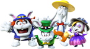
From Super Mario Odyssey
These brutal snobs come from the moon, and hold a reputation for their excellent sense of fashion and decor. Their bark can be just as bad, if not worse, than their bite. And a broodal would NEVER be caught dead without a stylish outfit, armed to the teeth with weaponry.
+1 Heart, +1 Courage
1 Power, 0 DefensePros
+ Athletics (Jump)
+ Knowhow (High Society)
+ Steady (Etiquette)Cons
N/ATech Defaults
Aerial
Repeat
Sequential
Tool
Bubblainian
From Super Mario Odyssey
These laid-back gastropods are all about one thing: taking it easy. Relaxation is the motto of the bubblainians, and if something comes to disturb their peace, then they'll put together all their resources to return things to a carefree calm.
+2 Courage
1 Power, 1 DefensePros
+ Athletics (Guard)
+ Cheer (Relaxation)
+ Perform (Instruments)
Adapted (Aquatic)Cons
Weakness (Earth)
You take +2 damage and become Dazed (1) for a number of turns equal to the damage taken.
LeglessTech Defaults
Allies
Boost (Defense)
Charm
Flowery

Bulrush
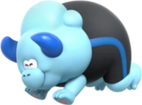
From Super Mario Bros. Wonder
Bulrush are typically placid beasts roaming the grasslands of the world. But placid doesn't mean harmless! They charge at each other as a greeting, which often leads many to be on the pointy end of their horns, warranted or not.+2 Heart
2 Power, 0 DefensePros
+ Athletics (Charge)
+ Guard (Melee)
+ Bully (Shove)Cons
Weakness (Charm/Confuse/Provoke)
The Level and Duration of any of these Statuses inflicted on you is doubled.Tech Defaults
Piercing
Overrun
Spillover
Stun
Cataquack
From Super Mario Sunshine
Cataquacks live idle lives, primarily on the beaches of tropical vistas. Notably, the closer their coloration is to red, the more aggressive they tend to be. Otherwise, they don"t often go looking for trouble, unless it brings itself to their proverbial front door.
+2 Heart
1 Power, 0 DefensePros
+ Athletics (Run)
+ Athletics (Flipping)
+ Bully (Shove)Cons
Handless
Weakness (Water)
You are flipped over, Dazed (1) for a number of turns equal to the damage dealt.Tech Defaults
Launch
Sequential
Throw
Underfoot

Cherbil
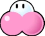
From Super Paper Mario
Enigmatic cloudy creatures, cherbils float using internalized gasses that they release in order to protect themselves. You don't wanna know where the gas comes from. Trust us.
+1 Spirit, +1 Courage
1 Power, 0 DefensePros
+ Knowhow (Cuisine)
+ Knowhow (Intrigue)
+ Bully (Disgust)
Hover
Immune (Gases)
Gas-based attacks and effects have no effect on you.Cons
Handless
LeglessTech Defaults
Aerial
Daze x2
Lingering x2
Stun
Coconutter
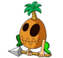
From Mario & Luigi: Partners in Time
Coconutters live deep in jungles and tropics, fostering and growing nature around them. They don"t often take kindly to trespassers!
Credit to "Fernikart57" on DeviantArt for the art.+1 Heart, +1 Spirit
1 Power, 0 DefensePros
+ Crafts (Tools)
+ Knowhow (Nature)
+ Perform (Chanting)Cons
Weakness (Fire)
You take +2 damage and suffer from a Lingering burn, lasting a number of turns equal to the damage taken.Tech Defaults
Hearty x2
Lingering (Poison)
Terrain (Rain)
Tool
Concordian
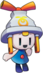
The friendly folk of Concordia seek harmony above all else. These fine folk are some of the most cooperative bunch you’ll ever meet.
+1 Spirit, +1 Courage
1 Power, 0 DefensePros
+ Knowhow (Electronics)
+ Cheer (Motivation)
+ Persuade (Kindness)Cons
N/ATech Defaults
Boost (Any)
Lengthen x2
Shared
ToolOptional: Element (Shock) on Tool or Ranged techniques.
Crab
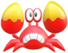
From Mario Bros.
Sidesteppers, Huckits, Crabbers… crabs are plentiful across the world, going by many names. Easily agitated, one would be a fool to end up on the pointed part of their claws.
+2 Heart
1 Power, 1 DefensePros
+ Aim (Fling)
+ Guard (Melee)
+ Notice (Underwater)
Adapted (Aquatic)Cons
Weakness (Blast, Quake)
You are flipped over, leaving you completely Stunned (6) for the next 2 turns. Your Defense is negated during this time.Tech Defaults
Counter
Disarm x2
Piercing
Throw
Cragnon
From Super Paper Mario
These technologically advanced cavemen have an odd way of speaking. Though their speech isn't as intriguing as their Cragnology. Being masters of influencing rock to carry messages and signals, they've created a variety of programs to entertain themselves when not on the hunt.
+1 Heart, +1 Courage
1 Power, 0 DefensePros
+ Coordination (Weapons)
+ Knowhow (Rocks)
or + Notice (Tracking)
+ Perform (Acting)Cons
N/ATech Defaults
Boost (Defense)
Daze x2
Strike-Through
Tool

Cursya
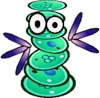
From Super Paper Mario
These gooey terrors are chock-full of cursed energy. Even just grazing one can be enough to stir up some bad luck!
+2 Spirit
1 Power, 0 DefensePros
+ Guard (Melee)
+ Magic (Curses)
+ Bully (Weaken)Cons
Handless
LeglessTech Defaults
Counter
Stun
Tutor (May not have any positive traits)
Weaken (Any)
Dorrie
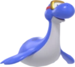
From Super Mario 64
Gentle giants of the seas and rivers, dorries often drift along, taking in the world as they go. They're a little awkward on land, but otherwise make for lovely company.
+2 Heart
1 Power, 0 DefensePros
+ Athletics (Swim)
+ Coordination (Carrying)
+ Notice (Underwater)
Immune (Poison)
Adapted (Aquatic)
Carrier (In Water)Cons
Handless
LeglessTech Defaults
Indirect
Reach
Selective
Swap x2
Dragon
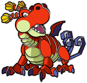
From Paper Mario 64
Dragons are fearsome creatures, holding sway over powerful breath attacks, and commanding personalities. Being in the good graces of a dragon can be one of the strongest boons anyone can receive.
+1 Heart, +1 Courage
1 Power, 1 DefensePros
+ Athletics (Fly)
+ Notice (Treasure)
+ Bully (Assert Self)
Carrier
FlyCons
Weakness (Specific Noise)
Choose a specific, common sound, such as a cricket's chirp, thunderclaps, or a bell. Whenever you can hear this sound, your attack is Weakened (2), and you lose any defense points you have, for as long as you can hear the sound (minimum 1 turn).Tech Defaults
Burst
Drain x2
Element (Any, defined at character creation)
Quake
Emoglobin
From Mario & Luigi: Bowser's Inside Story
Emoglobin are bizarre little antibodies that typically take up important functions in one's body. How they gain larger size, and how they escape their host bodies, is greatly unknown. What is known is that they excel at using their restorative properties to aid those around them. Just.. don't ask where its healing comes from.
+2 Heart
0 Power, 0 DefensePros
+ Heal (First Aid)
+ Knowhow (Biology)
+ Steady (VS Status)
Hover
Efficient (First Aid)
Adapted (Bodies)Cons
Handless
LeglessTech Defaults
Boost
Dismiss
Group
Hearty x2

Fake Block
From Super Mario 3D Land
Sometimes, a block containing a power-up becomes suffused with the power in the item. This gives the block a spark of life, allowing it to move and use its powers to its own benefit.
+2 Courage
1 Power, 0 DefensePros
+ Crafts (Power-Ups)
+ Trickery (Blend In)
+ Steady (Power-Ups)
Start with one Power-Up or Item worth 50 Coins or less
Latent (Chosen Item/Power-Up)
For 5 FP: Activate the effect of your chosen Power-Up or Item (in the case of the Power-Up, you have to target yourself)Cons
Handless
Legless
Weakness (Underfoot)
You are Dazed (1) for a number of turns equal to the damage dealt, and you lose your active power-up if you have one.Tech Defaults
Aerial
SnatchTwo of the following:
Counter
Lingering x2
Indirect
Ranged, Element (Any, related to chosen Power-Up or Item)
Adapted (Aquatic), Carrier, or Hover (as a Personal Trait)

Floro Sapien
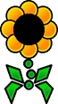
From Super Paper Mario
Distant relatives of dayzees, Floro Sapiens are extremely conscious of their environment. They work to keep it clean and safe, and often resort to hostility when they can't fix the problem with good vibes.
Created by: @lonelyazalea
+2 Spirit
1 Power, 0 DefensePros
+ Magic (IOnfluence)
+ Knowhow (Nature)
+ Steady (Thorns)
Immunity (Water)
You heal 5 HP instead.
1 Resist (Earth)Cons
Weakness (Poison)
You take +2 damage and are confused (3) for 2 turns.Tech Defaults
Alt-Cost (HP), Indirect
Charm
Dismiss
Daze x2
Fractone
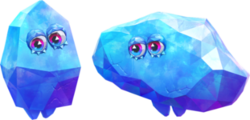
Made of a strange material called Fractonium, these crystal beings from the Underground World can break and reform their bodies seemingly at will. They have a habit of copying the mannerisms of those around them.
+1 Heart, +1 Courage
1 Power, 0 DefensePros
+ Knowhow (Tattle)
+ Perform (Vocal Mimicry)
+ Steady (Shape-Change)
Construct (Lifelike)
Mimicry
Resilient
SinkerCons
HandlessTech Defaults
Burst x2
Counter
Empower
Spillover
Fronk
From WarioWare Inc.
Fronks are bizarre little creatures found in most urban areas. They have an innate connection with technology, which can often put them into precarious situations when investigating machines.
Concept: @yossycoin
+2 Spirit
1 Power, 0 DefensePros
+ Magic (Technology)
+ Knowhow (Hacking)
+ Trickery (Stealth)
Clones (Copies)
Efficient (Technology)Cons
Weakness (Air) You must make a Steady check versus Disorientation, lasting a number of turns equal to the damage taken (minimum 1 turn).Tech Defaults
Repeat
Simple
Selective
Tool

Gamboo
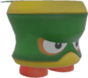
From Super Mario Bros. Wonder
Clans of gamboo travel the lands as one, speaking and acting in unison. Though sometimes, an individual gamboo may set out to start their own clan, or to find higher purpose. Even so, company is never far when traveling with a gamboo.
+1 Spirit, +1 Courage
1 Power, 0 DefensePros
+ Crafts (Bamboo)
+ Trickery (Camouflage)
+ Steady (Balance)
CarrierCons
HandlessTech Defaults
Indirect
Minion (Gamboo)
Ranged
SequentialOptional: Variant (Steady) on Minion techniques.
Gearmo
From Super Mario Galaxy
Gearmos are autonomous janitors, most well equipped for the care and maintenance of machinery. They can be very particular with keeping things clean, and are easily irked when things make their jobs harder.
+1 Spirit, +1 Courage
1 Power, 0 DefensePros
+ Crafts (Maintenance)
+ Knowhow (Machinery)
+ Bully (Chiding)
Construct (Lifelike)
1 Resist (Blast)Cons
Weakness (Shock)
You become Dazed (1), lasting for a number of turns equal to the damage taken.Tech Defaults
Disarm x2
Homing
Swap x2
Tool (Built-In)

Gooble
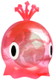
From Super Mario Sunshine
Goobles come in all colors of the rainbow. Being made of paint, they have a knack for creativity that goes into everything they do.
+1 Heart, +1 Courage
1 Power, 0 DefensePros
+ Athletics (Leaping)
+ Crafts (Painting)
+ Bully (Poison)
Clones (Copies)
Immune (Poison)
You heal 5 HP instead.Cons
Handless
Legless
Weakness (Water)
You take double damage. If this Technique wouldn't usually deal damage, it deals 2 Piercing damage. Your Attack is Weakened (1) for a number of turns equal to the damage taken.Tech Defaults
Drain x2
Lingering x2
Spillover
Terrain (Goop)Optional: Element (Poison) on Indirect or Ranged Techniques
Gotchawrench
From Wrecking Crew
These malignant tools are what happens when a tool goes for too long without use, growing resentful and finding use for themselves. Often, this leads to them causing trouble in order to make problems for them to fix. Despite the name, Gotchawrenches can take the form of most any hardware tool.
+2 Heart
1 Power, 0 DefensePros
+ Athletics (Demolition)
+ Crafts (Construction)
or + Crafts (Jury-Rig)
+ Trickery (Stealth)
Construct (Lifelike)Cons
N/ATech Defaults
Daze x2
Piercing
Quake
Tool (Built-In)

Gushen
From Super Mario Odyssey
Gushen are haughty sea creatures, priding themselves on their speed and their 'staches.
+1 Heart, +1 Courage
1 Power, 0 DefensePros
+ Athletics (Propel)
+ Aim (Spray)
+ Poise (Etiquette)
Adapted (Aquatic)
Fly
Hover
You cannot use your fly or hover traits if you do not have access to water.Cons
Handless
Weakness (Heatwave/Lava)
You cannot use your fly or hover personal traits in battles where either of these conditions are present, unless there is a nearby source of water.Tech Defaults
Element (Water)
Provoke x2
Ranged
SpilloverOptional: Element (Water) on Indirect or Ranged attacks

Gusty
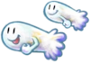
Gusties are wind spirits who go wherever the wind blows. A gusty is as carefree as the spring breeze, never staying in one place for too long before setting off for the next new experience.
+1 Heart, +1 Spirit
1 Power, 0 DefensePros
+ Athletics (Flying)
+ Knowhow (Navigation)
+ Bully (Pushover)
Hover
FlyCons
LeglessTech Defaults
Aerial
Overrun
Strike-ThroughOptional: Element (Air) on Indirect attacks
Honeybee
From Super Mario Galaxy
Honeybees live out fulfilling lives creating honey for their colony, and carrying out the will of their queen. Some may leave their colonies to act as emissaries of their kingdom, or to see what the wider world holds for them.
+2 Courage
1 Power, 0 DefensePros
+ Heal (Syrup)
+ Trickery (Dodge)
+ Steady (Orderly)
FlyCons
N/ATech Defaults
Aerial
Flowery
Lingering x2 (Poison)
Strike-Through x2

Inchworm Pipe
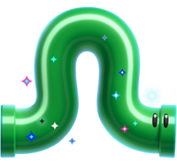
From Super Mario Bros. Wonder
Pipes suffused with Wonder Power, inchworm pipes are often in constant motion. If an inchworm pipe wants to get somewhere, there's little that can be done to stop it.
+1 Heart, +1 Spirit
1 Power, 1 DefensePros
+ Athletics (Climbing)
+ Magic (Transport)
+ Trickery (Blend In)
Carrier
Construct (Lifelike)
SinkerCons
Handless
LeglessTech Defaults
Divider
Overrun
Ranged
Swap x2
Jibberjay
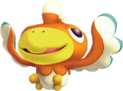
These loud-mouthed avians live for the thrill of competition. They make their homes in jungles, where they can find challenging places to race each other.
+2 Courage
1 Power, 0 DefensePros
+ Athletics (Flying)
+ Bully (Taunting)
+ Perform (Stylish Moves)
FlyCons
N/ATech Defaults
Aerial
Boost (Dodge)
Disable x2
Disorient
Kerpop
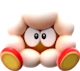
From Super Mario Bros. Wonder
Kerpops are distant relatives to goombas. Over time, they've adapted their bodies to the harsh volcanic conditions they dwell in, with built-in defense mechanisms for when things get too hot.
+1 Heart, +1 Courage
1 Power, 0 DefensePros
+ Athletics (Jumping)
+ Crafts (Cooking)
+ Bully (Loud Noises)
Immune (Fire) If targeted by a technique with Element (Fire), your hard body pops, lightening your weight. You gain a 1d6 bonus to any rolls relating to jumping or going airborne. While popped, your Immune (Fire) becomes 1 Resist (Fire). This lasts until the end of combat, or until the end of the scene.Cons
HandlessTech Defaults
Aerial
Burst
Disorient
Provoke x2
Li'l Oink
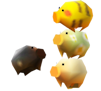
From Paper Mario 64
These bespeckled pigs are skittish little things, though are beloved by all for their patterns. They are creatures of chance, happening upon places and things they generally shouldn't.
Created by @lonelyazalea
+1 Heart, +1 Courage
1 Power, 0 DefensePros
+ Athletics (Fleeing)
+ Notice (Movement)
+ Perform (Cuteness)
Immune (Confusion)Cons
HandlessTech Defaults
All
Roulette (-2 FP on one Roulette Slot)
Lucky Hit, Fumble (-3 FP on the Lucky Slot)
Coin Toss (-3 FP on one Coin Slot)
Lochlady
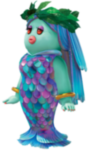
The gorgeous merfolk of Lake Lamode are most well known for their seamstresses. Even the youngest know how to drive a stitch, and the end result is almost as dazzling as their looks.
+1 Spirit, +1 Courage
1 Power, 0 DefensePros
+ Athletics (Swimming)
+ Crafts (Clothing)
+ Perform (Presentation)
Adapted (Water)Cons
N/ATech Defaults
Bestow
Charm
Daze x2
Lengthen x2Optional: Variant (Perform) on Charm and Daze techniques.
Milde
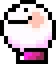
From Super Mario World 2: Yoshi's Island
Mildes are known to be a cheerful and carefree bunch, not letting much get to them. They're known for their precise movements and marching, though tend to be a little airheaded… especially when stomped on.
Created by @lonelyazalea and @piyohthegenius
CAUTION! With their weakness, a milde player can easily get out of hand in combat. Make sure to run this by your GM first!
+2 Courage or +1 Heart, +1 Courage
1 Power, 0 DefensePros
+ Athletics (Popping)
+ Coordination (Marching)
+ Steady (Poise)
Clone (Copies)
You may use Athletics in order to create a copy.Cons
Handless
Weakness (Aerial) You take double damage, and are forced to create a copy. Each copy has -1 attack, increasing by -1 for every subsequent copy made this way.Tech Defaults
Burst
Indirect
Launch
Mister I
From Super Mario 64
Mister Is are incredibly odd beings, being large floating eyeballs. Their disconcerting gaze is described as disturbing by some, and hypnotic by others. Usually, though, you can find them just.. float there.
+2 Spirit
1 Power, 0 DefensePros
+ Notice (Observations)
+ Notice (Secrets)
+ Bully (Unnerve)
HoverCons
Handless
Legless
Weakness (Disoriented)
The Level and Duration of any Disoriented inflicted on you is doubled.Tech Defaults
Confuse x2
Fear x2
Homing
Ranged

New Donker
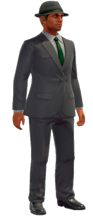
From Super Mario Odyssey
Most New Donkers are just trying to get by. They're usually no-nonsense, but see the importance of taking time to wind down from work.
+1 Spirit, +1 Courage
1 Power, 0 DefensePros
+ Knowhow (Any one job, chosen at character creation)
+ Trickery (Join the Crowd)
+ Perform (Modern Hits)Cons
N/ATech Defaults
Alternative (Coins)
Tool1x Custom Set of Traits
Custom Sets are defined during character creation. For New Donkers, they can include any Traits totalling no more than 2 FP, and can't include negative Traits.
Phanto
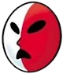
From Super Mario Bros. 2
Phantos are ancient guardians of relics, most commonly found in ruins and dark places. What stirs them from their duty is largely unknown, but a phanto is utterly relentless in pursuit of its goals.
+2 Spirit
1 Power, 1 DefensePros
+ Knowhow (Lore)
+ Notice (Pursuit)
+ Trickery (Stealth)
Construct (Lifelike)
FlyCons
Handless
LeglessTech Defaults
Homing
Indirect
Snatch
Strike-Through
Pigarithm
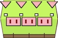
From Super Paper Mario
Pigarithm are flighty creatures, due in part to the large amount of coins they carry inside them at all times. The trust of a pigarithm is rarely earned, but represents a near unbreakable bond.
Created by: @lonelyazalea
+2 Heart
1 Power, 1 DefensePros
+ Athletics (Linear Speed)
+ Notice (Coins)
+ Persuade (Commerce)
+½ Starting CoinsCons
Handless
Weakness (Aerial, Crushing)
The Level and Duration of all Statuses you suffer from these attacks are doubled, and you lose 1 coin per point of damage.Tech Defaults
Alt-Cost (Coins)
Boost (Dodge)
Overrun
Minion (Split Selves)
Pi'illo
From Mario & Luigi: Dream Team
The Pi'illo are an ancient people, hailing from Pi'illo Island. Though many are content to stay in their ancestral homes, the dreamy and longing nature of the Pi'illo folk lead them to travel beyond the island's shores.
+1 Spirit, +1 Courage
1 Power, 0 DefensePros
+ Crafts (Bedwear)
+ Magic (Dreams)
+ Cheer (Inspire)
HoverCons
Weakness (Sleep)
The Level and Duration of all statuses you suffer associated with sleep are doubled.Tech Defaults
Aerial
Daze x2
Ranged
Tutor

Pixl
From Super Paper Mario
These geometric constructs were created from the spirits of the Game Overed by the shamans, fit into vessels for specific purposes. Though the means of their creation have been lost to all but the eldest of shamans, many still lie in wait in forgotten parts of the world.
+1 Spirit, +1 Courage
1 Power, 0 DefensePros
+ Knowhow (Ancient Lore)
+ Magic (Skill Substitution)
+ Cheer (Assist)
Construct (Lifelike)
Fly
HoverCons
Handless
LeglessTech Defaults
Boost (Any)
Hustle, Others
Tool (Built-In)
Tutor

Poplin
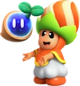
From Super Mario Bros. Wonder
Poplins are the residents of the Flower Kingdom, following the rule of Prince Florian. They often tend to gardens and wonder seeds, with flowers holding a special place in their society.
+1 Spirit, +1 Courage
1 Power, 0 DefensePros
+ Aim (Items)
+ Knowhow (Flora)
+ Persuade (Sales)
Immune (Water)
You heal 5 HP instead.
+½ Syrup effectiveness (for items, as user or target)Cons
Weakness (Heatwave)
You are considered Disoriented (1) while in a heatwave.Tech Defaults
Flowery
Shared
Terrain (Overgrown)
ToolOptional: Split on Flowery Techniques.
Portrait Ghost
From Luigi's Mansion
Portrait ghosts come from portraits of people who've died. They'll often become a mimicry of the person they were painted after, partaking in jobs and routines that the subject did in life.
+2 Spirit
1 Power, 0 DefensePros
+ Athletics (Telekinesis)
+ Knowhow (Any, defined at character creation)
+ Trickery (Dodge)
Hover
Immune (Fear, Poison)
Intangible
Undead (Lifelike)Cons
Weakness (Sudden Light)
You are stunned by the light, Dazing (1) you for a turn for each point of damage taken (minimum 1 turn).
LeglessTech Defaults
Drain
Fear x2
Launch
Throw

Sammer Guy
From Super Paper Mario
These valiant warriors come from the Sammer Kingdom. Each lives by their own personal code of honor, often finding work as mercenaries. But each guy fights for two things above all: glory for themselves, and for the Sammer Kingdom.
+2 Heart
1 Power, 1 DefensePros
+ Coordination (Acrobatics)
+ Guard (Melee)
+ Bully (Intimidate)Cons
N/ATech Defaults
Counter
Fear x2
Piercing
Tool (Indirect)

Steam Gardener
From Super Mario Odyssey
Gardening automatons who call the Wooded Kingdom home. Gardeners will often go on pilgrimages to distant lands to learn about new plants, and bring seeds back to their home.
+1 Heart, +1 Spirit
1 Power, 1 DefensePros
+ Aim (Watering)
+ Crafts (Plants)
+ Knowhow (Flora)
Construct (Lifelike)
SinkerCons
HandlessTech Defaults
Dismiss
Flowery
Ranged SpilloverOptional: Element (Water) on Ranged attacks

Shiverian
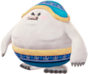
From Super Mario Odyssey
These racers are as cheerful as their bodies are dense. Their thick fat helps them maneuver around without much use of their tiny legs, and helps them to protect what they care about. They adore friendly competition, and you'd be hard pressed to find a shiverian who backs down from a challenge.
+2 Heart
1 Power, 0 DefensePros
+ Athletics (Bouncing)
+ Guard (Melee)
+ Steady (Balance)
1 Resist (Ice)Cons
N/ATech Defaults
Aerial
Counter, Harmless
Disorient
StunOptional: Element (Ice) on Indirect attacks
Shroob
From Mario & Luigi: Partners in Time
Shroobs were once a race of fearsome aliens from Planet Shroob. Now, they've faced near extinction. The shroobs who still remain are just as shrewd and intelligent as their forefathers, and may one day seek to rise for another takeover…
+1 Heart, +1 Spirit
1 Power, 0 DefensePros
+ Aim (Rays)
+ Crafts (Gadgets)
+ Knowhow (Biology)Cons
N/ATech Defaults
Minion (RC Drones)
Tool (Ranged)
Variant (Crafts)
Weaken

Squirpian
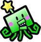
From Super Paper Mario
Squirpians are a near-extinct race of aliens once trusted with guarding a pure heart. In times since then, they've roamed the galaxy with their purpose complete, seeking new meanings for their existence.
+1 Heart, +1 Spirit
1 Power, 0 DefensePros
+ Coordination (Piloting)
+ Knowhow (Lore)
+ Cheer (Inspire) FlyCons
N/ATech Defaults
Boost (Any)
Burst
Provoke x2
Ranged
Talking Flower
From Super Mario Odyssey
These Flower Kingdom fellows love nothing more than talking. They often travel far and wide, just to have a conversation partner.
Concept: @piyohthegenius
+2 Courage
1 Power, 0 DefensePros
+ Knowhow (Any, defined at character creation)
+ Cheer (Encourage)
+ Persuade (Shmooze)
FlyCons
Handless
LeglessTech Defaults
Boost
Confuse x2
Flowery
Provoke x2
Theet
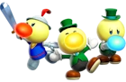
From Princess Peach: Showtime!
Theets are patrons of the arts, forming some of the best acting troupes around. Though prone to stage fright, there's very little that will stop a theet from putting on a good show.
+2 Courage
1 Power, 0 DefensePros
Trickery (Disguise)
or Crafts (Costumes)
+ Cheer (Teamwork)
+ Perform (Theatrics)
FlyCons
Weakness (Fear) The Level and Duration of all Statuses you suffer associated with fear are doubled.Tech Defaults
Allies
Daze x2
Element (Light)
Flowery
Tiki
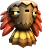
From Donkey Kong Country Returns
Tikis are a proud race of self-made, fruit fueled tribesmen. They possess great talent in music, which they often use to create disorienting and hypnotic songs to gain the upper hand.
+1 Spirit, +1 Courage
1 Power, 0 DefensePros
+ Crafts (Woodworking)
+ Magic (Hypnotism)
+ Perform (Music)
Construct (Lifelike)
HoverCons
Handless, or Weakness (Crushing)
You take +2 damage and fall to the ground. This leaves you Dazed (1) for a number of turns equal to the damage dealt.
LeglessTech Defaults
Charm
Confuse x2
Disorient
Element (Fire)
Topman
From Super Mario Galaxy
Topmen are a tribe of spacefaring robots, constantly seeking territory. They often settle clashes by crashing into each other, seeing who falls first. Topmen are often honorable in the art of combat, using the bulk of their body to take down their foes.
+1 Heart, +1 Courage
1 Power, 1 DefensePros
+ Athletics (Spinning)
+ Bully (Knock Around)
+ Steady (Balance)
Construct (Lifelike)
SinkerCons
Weakness (Shock)
You take +2 damage and become Dazed (1) for a number of turns equal to the damage taken.
LeglessTech Defaults
Counter
Disorient
Divider
Launch

Tostarenan
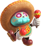
From Super Mario Odyssey
These fiesta loving skeletons call the sand kingdom home. Though when they leave the sands of Tostarena behind, they always bring the party with them.
+2 Courage
1 Power, 0 DefensePros
+ Trickery (Parlour Tricks)
+ Cheer (Celebrations)
+ Perform (Instruments)
Resilient
Undead (Lifelike)Cons
Weakness (Blast)
You take +2 damage and become Dazed (1) for a number of turns equal to the damage taken.Tech Defaults
Allies
Boost (Any)
Charm
Dismiss
Tox Box
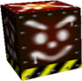
From Super Mario 64
Tox Boxes follow patterns their whole life, idly rolling about. Unless, of course, something stops them from completing their pattern, in which case they begin to wander around..
+2 Heart
1 Power, 1 DefensePros
+ Athletics (Run Over)
+ Guard (Melee)
+ Bully (Knock Over)
Construct
SinkerCons
Handless
LeglessTech Defaults
Daze x2
Overrun
Secure, Others
Sequential
Tsubon
From Mario & Wario
These cursed urns often serve as mindless guards of caverns and temples. Though, there are a few among them who gain a heightened sense of self, setting out to find purpose in the world.
+2 Heart
1 Power, 0 DefensePros
+ Aim (Projectiles)
+ Athletics (Climbing)
+ Crafts (Pottery)
Construct (Lifelike)Cons
Weakness (Launch/Throw)
If targeted by a move with the Launch or Thrown tags, your pottery cracks. You are Weakened (-1 POW) for a turn for each point of damage taken (minimum 1 turn).Tech Defaults
Lingering x2
Piercing
Ranged
RepeatOptional: Element (Any) on Ranged attacks. (Must be decided at character creation)

Twilighter
From Paper Mario: The Thousand Year Door
These shady folk prefer the darker corners of the world. Though their disposition may be gloomy, they're hardy survivors who will stand for the safety of friends and family. Though, they may just take the longer or less noticeable route to success.
+2 Spirit
1 Power, 0 DefensePros
+ Crafts (Stitching)
+ Trickery (Hiding)
+ Bully (Coerce)
ResilientCons
Weakness (Curses)
The duration of effects caused by curses are doubled.
Weakness (Sudden Light)
You are stunned by the light, Dazing (1) you for a turn for each point of damage taken (minimum 1 turn).Tech Defaults
Daze x2
Repeat
Snatch
Terrain (Darkness)Optional: Element (Shadow) on Indirect or Ranged Techniques

Uproot
From Super Mario Odyssey
Uproots dwell in deep forests, creating shells to protect themselves from the elements. Weirdly enough, the shells they make often resemble plant pots..
+2 Heart
1 Power, 0 DefensePros
+ Athletics (Jumping)
+ Guard (Melee)
+ Crafts (Ceramics)
ElevationCons
N/ATech Defaults
Aerial
Indirect
Reach
Repeat

Virus
From Dr. Mario
Viruses are naughty little creatures, most often set to inflict their ails on whoever they come across. Even so, when faced with threats much greater than one of their own, their camaraderie is second to none, joining forces to take on tough foes.
+1 Spirit, +1 Courage
1 Power, 0 DefensePros
+ Knowhow (Medicine)
+ Trickery (Shenanigans)
+ Bully (Weaken)
Clone (Copies)
Adapted (Bodies)Cons
Weakness (Life Magic, Medicine)
You treat the HP you would normally recover as damage.Tech Defaults
Confuse x2
Disable x2
Lingering x2 (Sickness)
Weaken

Volbonan
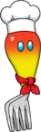
From Super Mario Odyssey
These expert chefs call the Luncheon Kingdom home. The travelers amongst them are always searching for new flavors for their dishes, and new meals to sample. Wherever a Volbonan goes, tasty food is sure to follow.
Credit to "Lwiis64" on DeviantArt for the art.
+1 Heart, +1 Spirit
1 Power, 0 DefensePros
+ Aim (Throw Item)
+ Crafts (Food)
+ Knowhow (Culinary)
1 Resist (Fire)Cons
N/ATech Defaults
Element (Fire)
Hearty x2
Launch
Piercing
Waddlewing
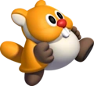
From Super Mario Odyssey
Waddlewings are deft little creatures, capable of gliding through the air with ease. Many waddlewings find a hobby in collecting objects.
Credit to @lucydndprincess for fly mechanic.
+1 Heart, +1 Courage
1 Power, 0 DefensePros
+ Athletics (Climb)
+ Athletics (Glide)
+ Bully (Snatch)
Fly When using this trait to Fly, you only stay airborne for a number of Turns equal to the Grades of Success you rolled to become airborne in the first place.Cons
N/ATech Defaults
Aerial
Disarm x2
Reach
Snatch
Whittle
From Super Mario Galaxy 2
Whittles are tree spirits, well known the world over for their bravery and pride. Though they may be lacking in conversation skills, a whittle is a stalwart friend, dedicated to whatever they may deem their cause to be.
+1 Heart, +1 Spirit
1 Power, 1 DefensePros
+ Athletics (Sliding)
+ Knowhow (Plants)
+ Steady (Resilience)
Immune (Fear)Cons
Weakness (Fire)
You take a +2 damage and suffer from a Lingering burn, lasting a number of turns equal to the damage taken.Tech Defaults
Aerial
Hearty x2
Overrun
Strike-Through x2